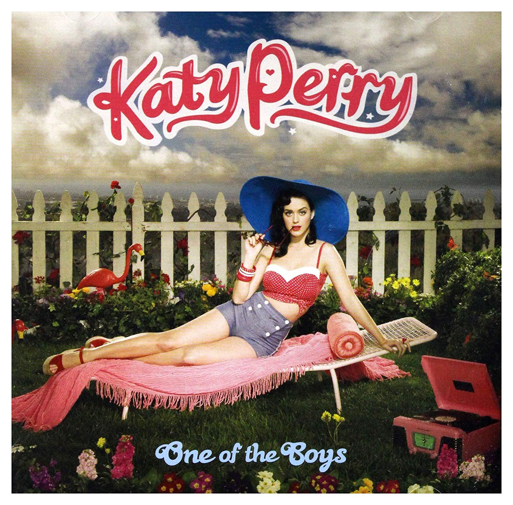

BIENVENIDOS A NUESTRO CLUB
Katheryn Elizabeth Hudson (Santa Bárbara, 25 de octubre de 1984), más conocida por su nombre artístico Katy Perry, es una cantante, compositora, actriz, empresaria y modelo estadounidense, jueza del programa de talentos American Idol, que saltó a la fama en 2008 con «I Kissed a Girl» y «Hot n Cold» de su álbum debut One of the Boys (2008).
los último sencillos lanzados y su fecha
Lanzado: 9 de agosto de 2019
Lanzado:16 de octubre de 2019
Lanzado: 21 de agosto de 2018
En esta sección se visualizan los albumes que Katy Perry ha lanzado durante su trayectoria
